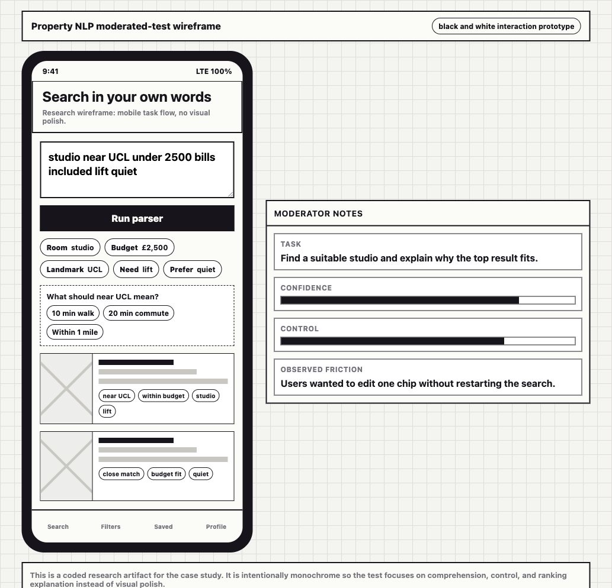
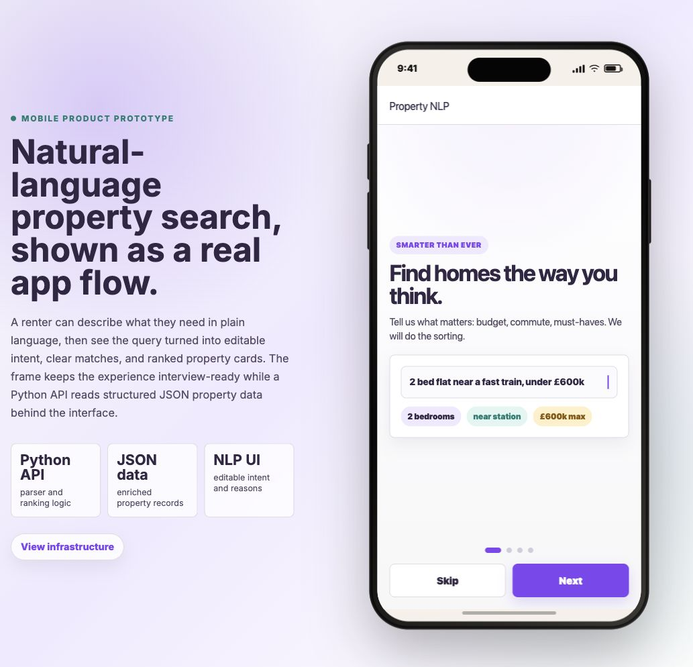
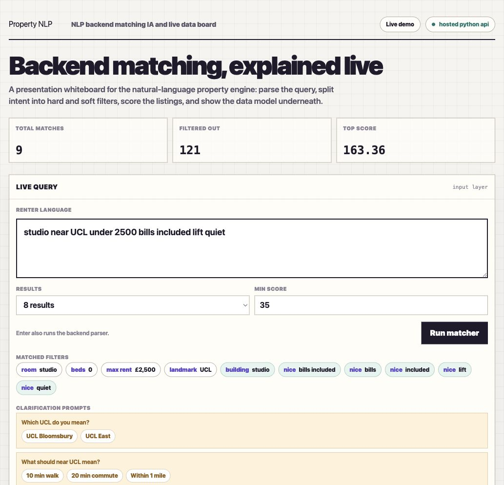

2026
Make AI property search easier to trust
Explainable Property Search is a prototype for renters who describe homes in natural language instead of starting with rigid filters. I designed the product flow and prototype logic across semantic search, editable filters, match reasons, and backend ranking.
The goal was to help users move from a vague renting brief to a shortlist they could understand, correct, and trust.

Problem statement
Because traditional property search starts with fixed filters, renters with mixed or ambiguous briefs struggle to express tradeoffs, which leads to repeated query rewrites and low confidence in the results.
1 — Let renters start with natural language
Users often think in messy combinations: near UCL, quiet, good commute, not a basement, flexible on budget if bills are included. A rigid filter-first flow forces them to translate that brief too early.
I designed a search flow where the user can begin with a sentence, then see a useful starting point rather than an empty or over-filtered result set.
For the product, this reduces early search failure. If renters reach relevant results faster, they are more likely to shortlist, return, and contact agents.

2 — Give control back through visible interpretation
AI search becomes fragile when it feels like a black box. Users need to know what the system understood and where they can correct it.
I made the parsed filters visible and editable. When the sentence changes budget, commute, property type, or must-have requirements, the interface shows those changes as chips the user can inspect and adjust.
Visible interpretation keeps the speed of AI search without removing the control that property decisions need.

3 — Make the system explain why results changed
The prototype was not only a screen flow. Behind the interface, I mapped parsing, filters, ranking, and match reasons so the product could explain itself when the user edited a requirement.
This mattered because property search is high-trust: users need to understand why a home appears before they shortlist it or contact an agent.
The backend board gave product, engineering, and stakeholders a shared way to discuss ranking quality, failure cases, and what the system should say when it was unsure.

Delivery and results
The prototype connected a renter-facing mobile flow with structured data and Python-backed ranking logic. Users could search naturally, edit parsed filters, inspect match reasons, and continue refining without restarting.
In prototype testing, task time improved from 6m20s to 3m45s, query rewrites dropped from 3.1 to 1.4, shortlist success rose from 60% to 85%, and confidence increased from 5.8 to 8.1.
So what?
The project showed that AI search is most useful when it improves the starting point without hiding the controls. Renters did not need the system to decide for them; they needed it to translate intent into something they could inspect and correct.
The next step would be a live pilot measuring saved homes, contact clicks, reformulation rate, return sessions, and lead quality.